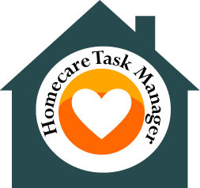
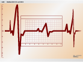

Homecare Task Manager helps you stay organized.
Homecare Task Manager is an online application that allows healthcare professionals to manage their calendar, associated tasks and appointments, add notes and contact information.
 Medical professionals have many tasks to complete throughout their day. This is especially true for caretakers. Homecare Task Manager allows you to organize and prioritize these tasks and apply them to your calendar.
Medical professionals have many tasks to complete throughout their day. This is especially true for caretakers. Homecare Task Manager allows you to organize and prioritize these tasks and apply them to your calendar.
 Add your clients and other contacts to an addressbook and associate tasks with those individuals. Easy export for records tracking.
 Sign up today for Homecare Task Manager and organize your life!
Sign up today for Homecare Task Manager and organize your life!